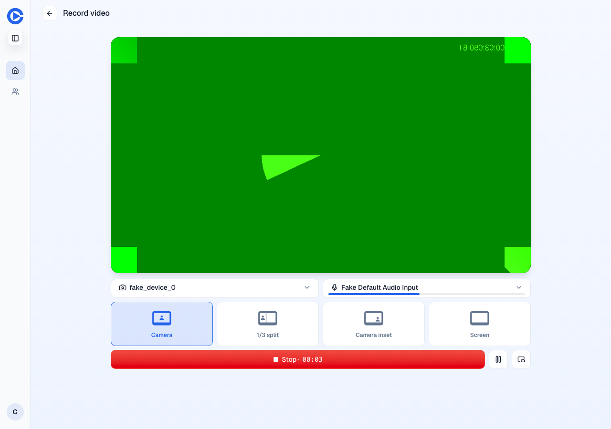
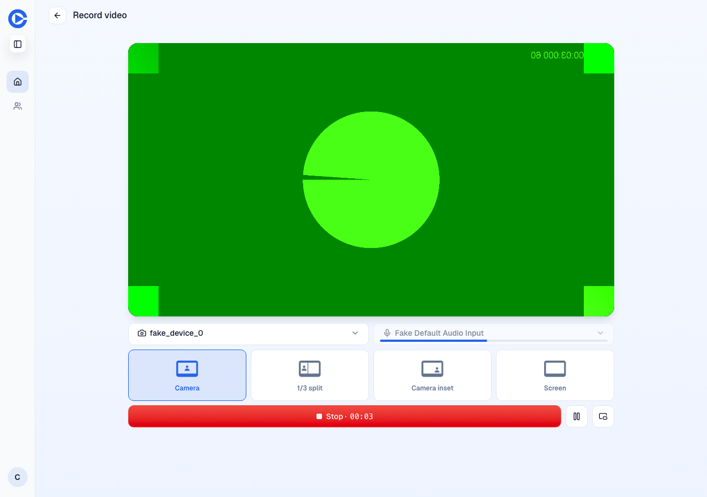
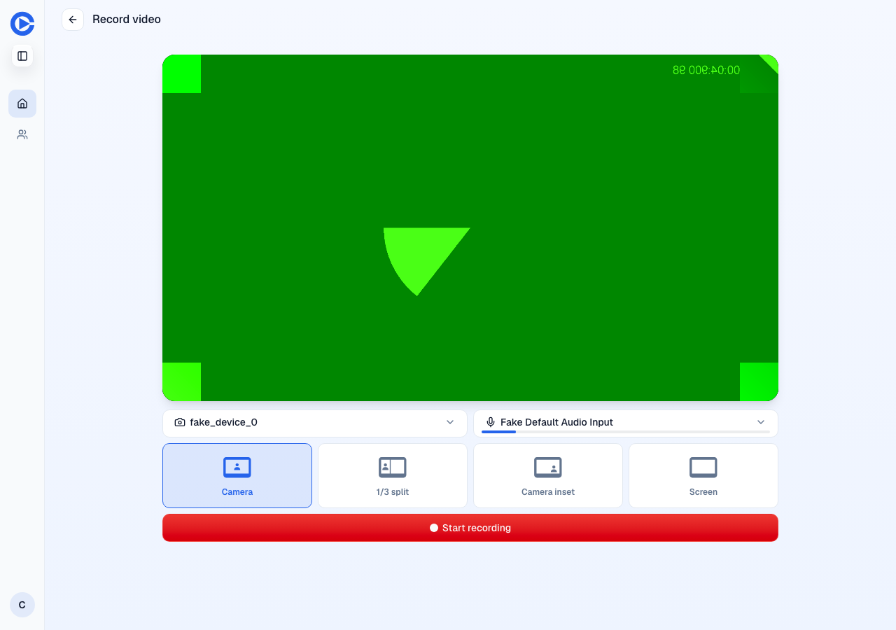

Microphone picker during a take (PR 1579)
Chromium with a fake camera and microphone, on the QA test account. The picker is the control to the right of the camera picker, above the layout buttons.
Before: staging on main, during a take. The picker is enabled.

After: PR preview, during a take. The picker is disabled.

After: PR preview, after discarding the take. The picker is enabled again.
